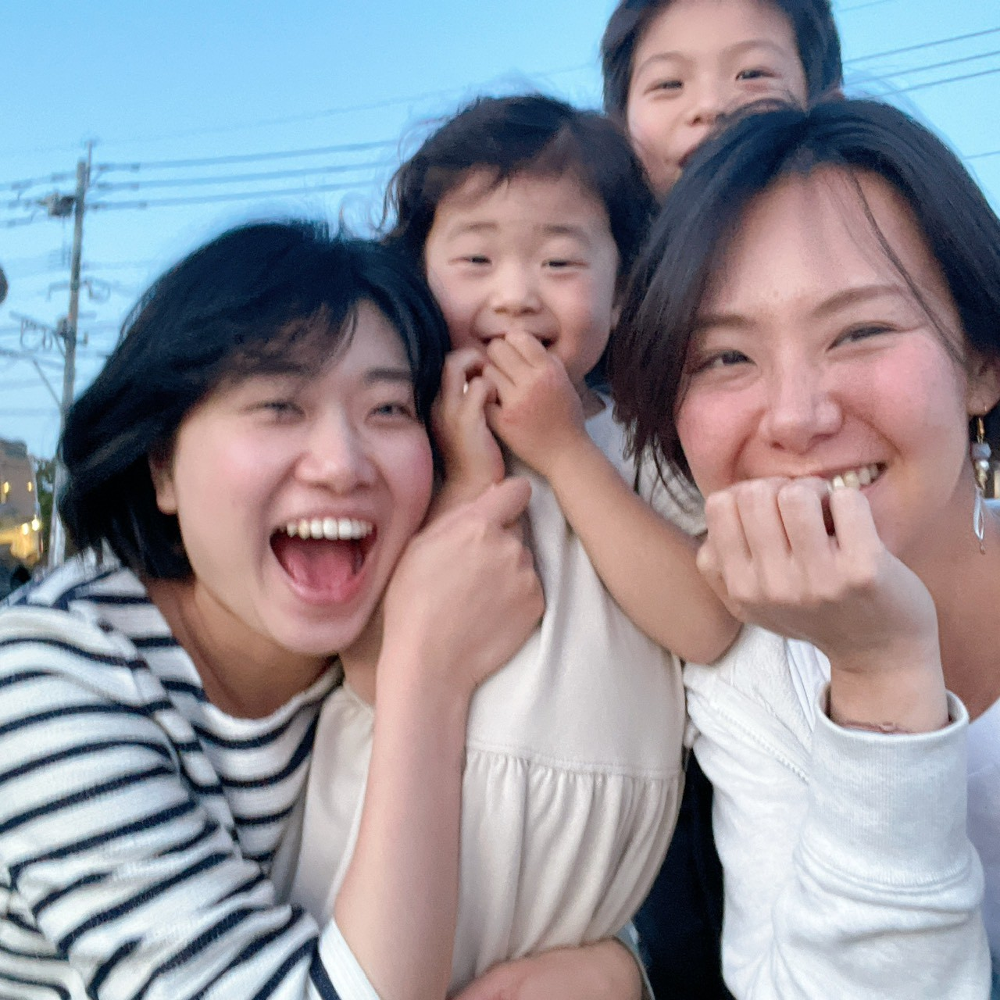
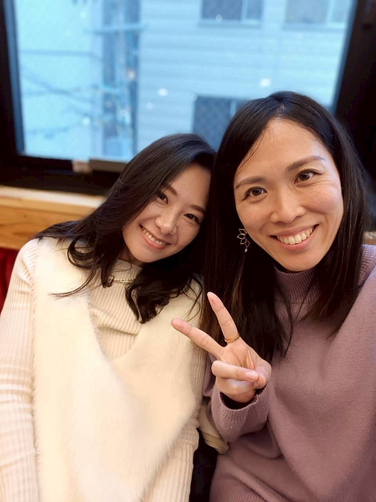
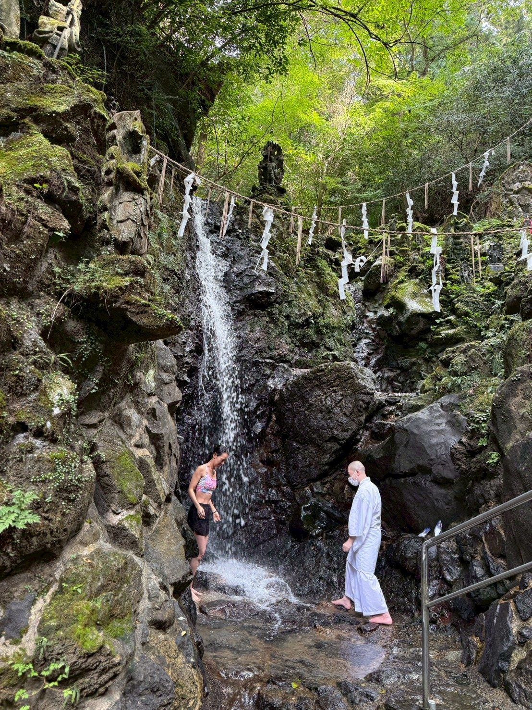

わたしは、 生まれてきて よかった。
そう思えなかった私が、 人生をかけて、 探し続けたもの。
愛されること。 認められること。
何度も傷ついて、 何度も迷って、 そして辿り着いた。
“本当の自分”に 還ること。
これは、 私の人生の記録。
私は思う。
人は変わる必要なんてない。
思い出すだけでいい。
自分の好きだったもの。
本当にやりたかったこと。
安心して笑えた感覚。
でも私は、
そこにたどり着くまで、
ものすごく遠回りをした。
ずっと、
「私は生まれてきてよかったの？」
を探していた。
prologue / what remains
今なら、こう思う。
人生は、足りないものを足して完成するものではなかった。
置き去りにした自分の声を、もう一度迎えに行く旅だった。
1章｜幼少期
私は、 生まれてきて よかったの？
人生最初のテーマは、愛と安心の欠如だった。
小学校1年生頃、
親が離婚。
父がある日、
家からいなくなった。
家には争いがあった。
父方の祖母と母の衝突。
家族間の悪口。
大人はみんな誰かの悪口を言ってた。
怒り。
恐れ。
包丁を持ち出すほどの家庭内の緊張。
母は私を守ることより自分を守ることを優先した。
大怪我した日、母は私の怪我を隠した。
祖母に自分が怒られないように。
父は助けてくれた。
離婚後、定期面会の時
女の子なんだから、身体にあとが残ったらどうすんだ。
電話帳で病院を探して連れて行ってくれた。
結果的に、
痕は残った。
私の心にも
痕が残った。
「安心」が存在しない環境。
さらに幼少期に母から聞いた一言。
「あなたを産む前に
下ろした子がいる」
この言葉が、無意識の深い場所に問いを残した。
「私は生まれてきてよかった命だったのか？」
この問いは人生全体の根源となる。
さらに母は厳格だった。
教師家系。
成果主義。
正しさ重視。
褒められた記憶が少ない。
「できたら認められる」
「正しくなければ価値がない」
「常に兄弟との比較」
「成績、数字、成果が価値基準」
そんな空気の中で育つ。
一方で父は、憧れだった。
賢くユーモアがありおもしろかった。
広い世界を教えてくれた。
常に海外が近くにあった。
守ってくれる存在。
愛されたかった存在。
お父さんみたいな人と結婚したかった。
理想像。
しかし同時に、
もっと甘えたかった
もっと愛されたかった
という欠乏感も残る。
つまり彼女の幼少期は、
愛を求めながら、
安心を失っていた時代
だった。

memory / what I learned
この記憶が、今の私をつくった。
安心を知らなかったから、安心を探し続けた。
愛を疑ったから、愛を見つけたときのあたたかさを忘れない。

02 / teenage
世界は、
なぜ争うのか？
小5で、いじめ。
いじめることも、
どっちも経験した。
数ヶ月に一度まわってくる、
自分の番。
昨日まで仲良かったのに、
夕方に友達から電話がくる。
「明日から一緒に学校に行けない」
ああ、明日から自分の番なんだ。
そう察した。
だから、
女の輪は嫌いだった。
男子と仲良くしても、
嫌な目で見られる。
いつ誰と仲良くしても、
誰と話しても、
自由でいいじゃん。
心の中で、叫んでた。
中学入学式の次の日。
知らない女の先輩から、
渡り廊下に呼び出された。
「調子のんなよ」
スカートが短かった。
靴下がたるんでた。
だから何？
たった数ヶ月生まれが違って、
学年が違うだけで、
なんでそんなに偉そうなんだろう。
意味がわからなかった。
ヒトと違う、
孤独。
モテた。
男子や先輩から告白された。
付き合ってみた。
歩いているだけで、
睨まれる。舌打ちされる。
私は何か悪いことをしたのだろうか？
こんな狭い世界は本当に嫌だ。
早く、こんなところ出たい。
地元は、だいっきらいだった。
受験前、
オールナイトライブへ。
猛反対されたけど、押し切った。
宇多田ヒカル。椎名林檎。
JUDY AND MARY。ハイスタ。
HAWAIIAN6。
高校受験では、
公立不合格。
親のため息。落胆。
ここで強烈に刻まれる。
“お金がかかると迷惑をかける”
そして、
“頼れない。自分で生きるしかない”
という、自立への強迫性。
高校の次の日から、
バイトの面接を決めた。
履歴書の年齢は、15歳。
自分で銀行に行き、口座を作った。
何をやっても、
すぐに時給が上がる。
振り込まれるお給料で、
やりたいことをやる。
なんでも、自分で叶えること。
稼ぐ。
成果を出す。
生き延びる。
16歳。新幹線に乗って、彼氏に会いに行く。
20万ためて、修学旅行には行かず、
オーストラリアの短期留学を選んだ。
20万ためて、免許合宿にも行った。
同時に、音楽に救われる。
バイトの先輩や、
仲良くなったバンドの人たちが、
教えてくれた。
Linkin Park。
Red Hot Chili Peppers。
SUM 41。
Good Charlotte。
地元のライブハウス。
ロック、ミクスチャー。
自分を、
貫く。
周囲と感性が合わない孤独。
まわりはみんなギャルだけど、
私は服装がロッカーだった。
でも、自分を貫く姿勢や、
ポジティブな思考、
人生を自らの手で切り拓いていく積極性。
マインドは、
ギャルだったのかもしれない。笑
もっと広い世界で、
生きたい。
世界中にファンがたくさんいる海外バンドなのに、
私の周りには、誰も好きな人がいない。
音楽は彼女に教えた。
“違っていい”
“自分でいていい”
“自分の好きを貫いて良い”

wound / what I received
この経験から、私は知った。
違和感は、間違いではなかった。
狭い世界で息ができない感覚は、広い世界へ向かう合図だった。

03 / twenties
"欠乏を埋める人生"
だった。
すべてが、
「自分には価値がある」
を証明する試みだった。
高級風俗嬢。
会員制クラブの飲み屋。
ショーモデル。
恋愛。人気商売。猛勉強。
20代前半で、
月に40万くらいは稼いでた。
モテた。
すべてが、
「自分には価値がある」
「社会的ステータス」
「どうやったら勝ちにいけるのか」
を証明する試みだった。
挑戦。
次の高みを、
常に目指してた。
日経新聞を読み、
学び、挑戦し、
独自のものの見方で話す。
けれど彼女は、
その経験を恥ではなく、
ある意味で、
人間探求として経験している。
風俗さえも、
単なるお金ではなかった。
自分の生きている価値。
自分の存在意義。
それを、知りたかった。
風俗はおもしろかった。
誰もが知っているようなお店のオーナー。
名の知れた病院の院長。
大学教授。政治家。
社会で成功している人の、
心の癒しと安心。
人は、
どこまででも
人であった。
男性としての本能。
ステータス。責任。
それを脱ぎ捨てたとき、
ただの中年の男になる姿。
人として接するから、
その人は社会的役割を忘れられる。
だから、みんなリピーターになった。
月に1、2回。
4時間から8時間の密会。
ほとんどが、食事と対話だった。
一流ホテルの鉄板焼き。
カウンターのお寿司。天ぷら。
前回からの進化。
葛藤。成果。成長。
それを何時間も話していた。
そんな私にしかできない、
コミュニケーション風俗が楽しかった。
個人戦の世界では、人気になれる。
自分自身で売上も立てられる。
お客さんはつく。
人気はすぐできる。
でも、一般社会では、
履歴書が通用しなかった。
結局、学歴社会なのか。
できない自分が悔しかった。
毎日同じ場所に、同じ時間、拘束される。
バイトは楽しかったのに、
責任がともなう社員は続かなかった。
私は、なれなかった。
経済。金融。税理士課程。
23歳。
慶應義塾大学 経済学部の
通信課程にも入学した。
税理士を目指すため、
先のステータスがほしかった。
入学論文のテーマは、
「不良債権がもたらす経済再生とは」
壊れたものは、
再生できるのか。
自分の考えを表現する論文は、
とてもおもしろかった。
どのように再価値を付け、
循環させていくのか。
その問いは、
後の人生そのものになる。
love / what was underneath
愛されたい、の奥にあったもの。
証明したかったのは価値ではなく、存在していいという許可だった。
人の弱さを見てきたから、人を役割だけで見なくなった。

04 / mother
守る。
でも、
自由でいたい。
24歳で結婚。
25歳で出産。
妊娠時、
母と姉から中絶を勧められる。
「新卒は今だけ、就職なさい」
「今の医療は、
中絶してもまた妊娠できる」
そして、姉との絶縁。
命を、
なぜそんな簡単に否定するの？
絶望した。
頼らない。
「何としてでも、
この子を守って育ててやる」
ここで決意する。
兄と父は、応援してくれた。
同時に、
強い戦闘モードにも入る。
子育て。生活。承認。自立。
すべてを一人で背負う。
旦那さんは、とにかく忙しい人だった。
転勤族でもあった。
その背景には、
「誰も助けてくれない」
という幼少期の信念がある。
生後2ヶ月半。
知らない土地で、パートに出る。
保育料5万。給料6万。
それでも、外に出たかった。
お金がほしかったんじゃない。
家の中で、
会話ができない子どもとずっと二人きり。
旦那さんは忙しくて話せなかった。
24時間母親で、
自分の話ができないことが苦しかった。
自分が、なくなってしまってた。
孤独から、解放されたかった。
知らない土地は、
冒険でもあった。
また、知らない土地に引っ越し。
転勤族は楽しかった。
お店、知らない道を開拓すること。
毎日が冒険だった。
2人目も授かった。
出産して2週間後に、
鹿児島へ引っ越した。
熊本で、
大地震にあった。
当たり前の生活が壊れた。
精神的に不安定になって、
旦那さんをおいて、地元に戻った。
救護車は町の方に向かっていくのに、
私は子どもと3人、逆方向に走った。
そこで暮らしている人たちは、
大変でもそこにいるのに。
私だけ逃げ出しているみたいで、
本当に苦しかった。
大災害では、人が見えた。
自分だけいい想いをしようとする人。
助け合おうとする人。
何もしない人。
自分にできることは、
物も情報もたくさん助けた。
支援物資をのぞきに行ったとき、
高校生の男の子が言った。
「おむつありますか？ お菓子ありますよ？」
涙を堪えた。
本当に、
ごめんなさい。
大人なのに。
みんな一緒なのに。
今の私は、
小さな命を守ることに必死で、
手伝うことができない。
だけど、できるようになったときには、
必ず恩返しするから。
強く、心に誓った。
子どもたちが成長し、
旦那さんは単身赴任になった。
姉が妊娠した。
里帰り出産の面倒は、私がみた。
子どもを降ろせと言われたことは、
正直ずっと恨んでた。
許せなかった。
でも、生まれてくる子どもは、
何も関係がなかった。
当時、私には2人の子どもがいて、
幼稚園に通っていた。
子どもたちが家にいると、
姉が落ち着かないだろうから。
夏休みの預かり保育にするために、
短期間のパートを決めた。
なんのために。
誰のために？
苦しかったけど、がんばった。
生まれてくる子どもと、
姉を許したかった。
「正解の子育て」への違和感。
子どもの発達。
集団検診で言われた。
専門のところに行ってください。
遊びに集中していて、
自分の名前を聞かれたときに、
ごにょごにょ言っていた。
それが、だめだったらしい。
たった1回のことで、何がわかるの？
個性って、
なに？
できなかったら、だめなの？
他の子と同じことが、
同じようにできないとだめなの？
ここで、後の思想が芽生える。
大人、親、そして自分の選択が、
もしかしたら子どもの可能性を
奪っているかもしれない。

mother / what changed
守ることは、縛ることではなかった。
子どもの命を守りながら、私自身の命も消してはいけなかった。
正解よりも、その子の奥にある可能性を見たいと思った。

05 / stillness
「なんで人は
変われないんだろう？」
知っても変わらない。
行動しない。
戻ってしまう。
私は向いてないのかな。
もっとできたんじゃないか。
言葉では限界がある。
願望は嘘をつく。
足りないものを
埋めようとしているだけ。
本当にやりたいことじゃない。
人は、
"変わる"んじゃない。
"思い出す"。

break / what I found
この崩壊が、入口だった。
変われない自分を責めるのをやめたとき、別の道が見えた。
本当の変化は、足すことではなく、思い出すことから始まった。

07 / world
海外移住｜
「豊かさって何？」
Malaysia へ。
子どもと海外生活。
クラファン。批判。挑戦。
でも疲れた。
ふと思った。
「私は何のために働いてる？」



08 / now
今｜「自分に還る」
ヒーリング。
DNAアクティベーション。
答えを教えるんじゃない。
思い出すサポート。
"生まれてきてよかった"
を思い出す旅の伴走。
それが今の私。



return / message
この人生の答えは、今の私の中にある。
遠回りした時間も、傷ついた記憶も、全部がここへつながっていた。
あなたの人生にも、まだ言葉になっていない光がある。
09 / values
大切にしていること。
抱きしめること。
離れること。
願いを見ること。
人生を選ぶこと。
10 / likes
好きなものが、
私をほどいていく。
Manifesto
「人は変わる必要はない。」
思い出すだけでいい。